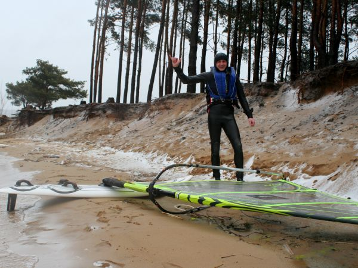

PASKUDNIE PIĘKNY WEEKEND
PIĄTEK. Wieczorem sprawdzam prognozy, które śledzę już od paru dni. Front, dwudniówka.
Darek pisze, czy nie wybralibyśmy się z Michałem nad sulejowskie, bo on by pojechał, ale szuka towarzystwa. Jeszcze nie pływał po zejściu lodu (my tak, tydzień wcześniej). Odpowiadam, że już jesteśmy umówieni. Na sobotę, bo w niedzielę mam urodziny mamy. Siedemdziesiąte. Muszę u niej być punktualnie o 14.
Prognoza: Kierunek SW. Najlepszy na Sulejów. Deszcz i dość chłodno. Na prognozie ICM na wykresie opadów oprócz niebieskiego (deszcz) cienka biała linia. Michał pisze: ”Może być deszcz ze śniegiem. Jeszcze nie pływałem w deszczu ze śniegiem”. Dochodzi 23, kiedy pani w TVN meteo straszy silnym wiatrem w porywach do 90km/h.. „Oby nie aż tyle” – myślę sobie, gaszę telewizor i idę się pakować do garażu.
SOBOTA. 8 rano - wyjazd, 9.30 - na miejscu. Karolinów. 6 stopni, leje i.. WIEJE..
Wyciągam wiatromierz. Średnia 37km/h, maks 41km/h.. 5-6 Bf, wyjątkowo równo, kierunek zgodnie z prognozą. Nie ma nikogo (fot.1).
Takluję 5.5. Jak przebieram się w piankę przyjeżdża Michał i Darek. Wiatromierz – średnia 40, maks. 44 km/h.
Rzut oka na wodę (fot.2):
Michał się zastanawia – 5.4 czy od razu 4.5. Darek takluje 5.2. Schodzę na wodę z 5.5, będzie za dużo, to zmienię, tego już mam gotowego. Michał patrzy jak odpływam i decyduje się na 5.4.
Po kilku halsach robi się trochę dużo, ale nie decyduję się zmieniać żagla. Mój mniejszy żagiel to 4.5 – to mogłoby być za mało, idealnie byłoby coś około 5.0, ale takiego (jeszcze) nie mam.
Za chwilę śmigamy we trzech.
Jest genialnie, na wodzie falki, jak zawsze przy tym kierunku.
Około 11tej przyjeżdża „Częstochowa” - Leszek z synem Karolem – schodzą na wodę na 5.0 (Leszek) i 4.7 (Karol). Ciekawe, Leszek waży 13kg więcej ode mnie i „lata” na żaglu mniejszym o pół metra..
Piękna jazda, ślizg non stop, zwroty w miarę wychodzą, próbuję jakieś podskoki. Bajka..
O 14 trochę siada. Michał „lata” na swoim 5.4, my schodzimy na brzeg. Nadciąga taka ciemniejsza chmura. Przed taką chmurą zwykle dmucha mocniej. Darek mówi, że albo jeszcze trochę polatamy, albo do domu – schodzimy na wodę. Leszek i Karol zostają na brzegu.
Michał akurat przy nas robi zwrot i odpala w stronę drugiego brzegu. My z Darkiem kilka metrów za nim. Warunki graniczne, ale łapiemy ślizg i daje się jechać. Dopływamy do drugiego brzegu. Tam robimy zwrot… z wiatrem dzieje się c o ś d z i w n e g o.. wszyscy wpadamy do wody.. Wpadłem na tyle szczęśliwie, że wszystko mam idealnie ustawione do waterstartu, udaje mi się „odpalić” niemal natychmiast. Wstaję..i… NIE WIDZĘ NASZEGO BRZEGU..
Sto metrów przede mną na wodzie jakiś siwy dym i to nie ten przysłowiowy tylko całkowicie realny. Od wody na 2 metry w górę biała poświata, wyżej szara ściana. CO JEST??
Ruszam. Wiatr odkręcił chyba o jakieś 45stopni (z SW na W). Staram się maksymalnie odpaść, żeby "wylądować" w okolicy samochodów.. tak na wyczucie, bo niewiele widać.
Wjeżdżam w tą szarą ścianę.. Jeszcze nie wiem, co mnie czeka.. Wiatr uderza znacznie mocniej i.. coś zaczyna mnie BIĆ.. Bije zwłaszcza po twarzy.. reszta okryta pianką, to trochę chroni. Siecze tak, że praktycznie oczy udaje się otwierać tylko na ułamki sekund. Wali GRAD i to prawie poziomo - przy wietrze około 7Bf. Zaciskam zęby i za wszelką cenę staram się utrzymać na desce – byle tylko dojechać na brzeg. Zupełnie nie wiem, jak radzą sobie chłopaki. Byliśmy o kilka metrów od siebie, ja odpaliłem pierwszy i zaraz zgubiłem ich z oczu..
Udaje się. Jestem na brzegu, mimo maksymalnego baksztagu, na jaki było mnie stać, jestem jakieś 100m od miejsca, gdzie mam samochód. Patrzę, co z chłopakami, ale nie jestem w stanie spojrzeć za siebie, tak bije.
Unoszę żagiel i włażę pod niego. W akompaniamencie gradowych werbli patrzę na wodę. Nie widzę nic. To trwa kilka minut.. Zastanawiam się, czy nie dojechali do brzegu gdzieś jeszcze dalej. Nie widzę. Po chwili z tej poświaty wyłania się Darek – widać na jakieś.. może 50 metrów? Po kolejnych pięciu minutach grad przechodzi. Za chwilę dopływa Michał. Postanowił chyba przeczekać to w wodzie.
Biegnę do auta po aparat, grad przeszedł w deszcz, robię kilka fotek.. na brzegu białawo. Zrobiło się zimno. Leszek i Karol siedzą w aucie (pomimo mokrych pianek) – tylko uchylili okienko, żeby wykrzyczeć swoje „o k…. ale dawało!”
Darek – dużo adrenaliny (fot.3):
Mój zestaw na brzegu (fot.4):
Darek bierze aparat. I ja będę miał gradową fotkę (fot.5):

Zrobiło się zimno, grad to już historia, teraz pada deszcz, Darka troszkę zaczyna telepać (fot.6):
Nie ma na co czekać, emocje mijają, zbieram swoje „zabawki”, trzeba je zataszczyć do samochodu (fot.7):
Gdzie Michał?
Jak dopłynął do brzegu to poszedł od razu do samochodu.. Zrobiłem tych kilka zdjęć, zataszczyłem sprzęt, Michał dalej w aucie – podchodzę, pytam, czy koniec na dzisiaj? Kiwa tylko głową – włączył sobie ogrzewanie i zaczyna się przebierać. Niby w piance jest ok, ale.. jak myślę o przebieraniu.. brrr…
Jest zimno. Michał się przebrał i „zbiera zabawki”.. proponuje, żebym się przebierał u niego w busie. Nie trzeba mnie na to namawiać. Zabieram ubranie z auta, wzrok pada na termos. Nalewam sobie kubek herbaty, z sokiem malinowym, jak zawsze. R a n y.. a l e o n a s m a k u j e.
Jak odjeżdżałem to termometr w aucie pokazywał 3 stopnie.. ale wtedy to już wychodziło słońce. Myślę, że wcześniej było koło zera. Potem się okazuje, że w Warszawie słońce było już mniej więcej od południa. Dziwnie na mnie patrzyli, jak mówiłem o gradzie. To już lepiej nie mówić.
Przed odjazdem rozmawiamy o niedzieli. Prognoza niemal identyczna, ma być „trochę cieplej”. Obaj z Darkiem mamy „imprezy” - na pływanie raczej bez szans. Michał mówi, że może namówi Majkę. Jeśli nie zejdzie na wodę, to może chociaż posiedzi na brzegu. Samemu raczej się nie pisze. Z tym swoim szelmowskim uśmiechem mówi do mnie, że jak się sprężę to przecież na 14 zdążę. Tych urodzin „przełożyć się” nie da. Żeby to jeszcze było Zegrze. Ale Sulejów? D a l e k o…
Wieczorem się namawiamy, co z niedzielą. Prognozy dla Zegrza dużo słabsze, więc ten wariant odpada. Michał namawia Majkę, żeby „wreszcie zaczęła sezon”. Ponoć patrzy na niego dziwnie. Mówi, że rano się zdecyduje. Jeszcze raz patrzę na prognozy. No IDEALNE na Sulejów. Krótka narada rodzinna. Obiecuję, że na urodziny zdążę.
NIEDZIELA. 7.30 wyjazd – o 9tej jestem na brzegu. Sms od Michała - jedzie z Majką, będą koło 10tej. Nie mam czasu czekać. Wieje – tak jak wczoraj i znowu SW. Jest cieplej – 8 stopni.
Szybkie taklowanie i o 9.30 jestem na wodzie. Przez pół godziny pływam zupełnie sam, nie ma nikogo nawet na brzegu. Na wszelki wypadek robię krótsze halsy. Warunki idealne, wieje równiutko i w sam raz na moje 5.5. Koło 10 dojeżdża Michał (takluje 5.4) z Majką (5.0) i niemal równocześnie z nimi Leszek (5.7) i Karol (5.0). Po kolejnych 30 minutach na wodzie jest z 10 desek (dojechała ekipa z Łodzi).
Falki znowu są super, co ciekawe, daje się skakać na obu halsach.
Ja dopiero próbuję wybijać się z wody.. ot, takie pierwsze podskoki.
Płynę, Michał jakieś 50 metrów za mną. Przede mną „wstaje” idealna rampa. Wybijam się.. po lądowaniu ciągle jestem na desce, jednak deska staje w miejscu.. Noo tak.. nie wypiąłem się z linek, deska stoi, wiatr uderza w żagiel no i.. frunę sobie w ślad za nim.. Jestem w wodzie, mija mnie Michał z kciukiem uniesionym do góry.
Waterstart.. dolna listwa nie rotuje.. wracam na brzeg. Listwa przebiła kieszeń masztową. Drobiazg, w serwisie za 4 dychy naprawią mi to w jeden dzień. Sprawdzam godzinę – 11.20. No dobra, w sumie za 10 minut i tak miałem kończyć. Zwijam sprzęt i śmigam na urodzinki. Jestem na czas, tak jak obiecałem.
Wieczorem czuję wszystkie mięśnie. Michał pisze, że Majka jest wykończona i że straciła głos – zastanawia się „czy z zimna, czy z wrażenia.. bo przecież było CIEPŁO”.
Majka i Michał zostają, ja zmykam już na te urodziny (fot.8).
Oni jeszcze pośmigają (fot.9).
…
Na urodzinach ktoś mówi, ze dzisiaj kilkaset metrów do kościoła postanowił „pokonać autem”.. „Pogoda taka niespacerowa” – dodaje..
Nic nie mówię, bo po co. Uśmiecham się tylko i myślę: „PASKUDNIE PIĘKNA POGODA”.
Relacja: Jacek. Zdjęcia: Jacek i Darek.
Karolinów na zalewem Sulejowskim w marcu 2007.